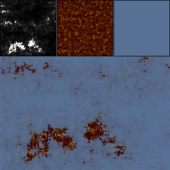
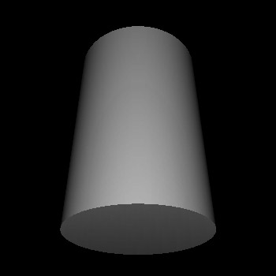
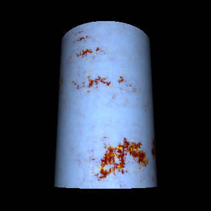
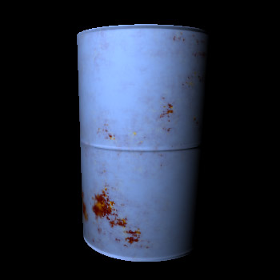
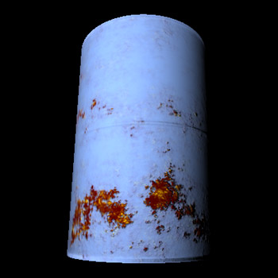
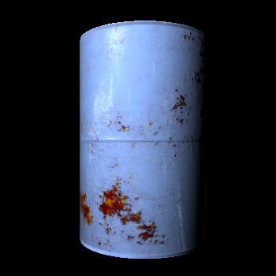
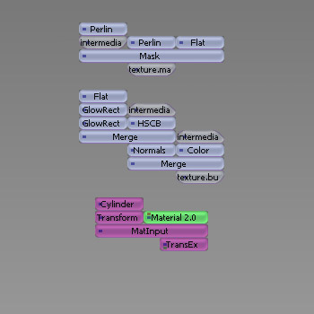

Getting Started
This page accompanies you building a project from scratch, from the first steps to the final texture export. You will learn how to set up a file, how to create textures, how to test them and how to export them.
The Plan
We're going to make a textures for an object that is ubiquitous in contemporary level design, just short of replacing the crate:a barrel. We're going to create a basic texture, a normal map and a specular map, each of which will be exported separately.
First steps
First, start a new project. If you haven't saved your previous project, please do so now. Then choose the option File > New from the main menu and okay the confirmation dialog. You now have an empty project in front of you. Let's populate it!
The Main Texture
Add a Flat Operator (How to work with operators). Set its color to a medium grey-blue (RGB: 87, 112, 148). This will be the base color of the barrel. Show the output of the Flat in the View Window.
Add a Perlin Operator. This will be the rust. Change the following values:
Frequencies: 4 (finer base grain)
Octaves: 5 (finer detail grain)
Seed: 1 (unique pattern)
Amplify: 1.375 (more contrast)
Gamma: 2.875 (shift toward Color 0)
Color 0: Dark Red (RGB: 56, 0, 0)
Color 1: Dirty Ochre (RGB: 147, 115, 0)
Show the output. You should see a largely brown texture with some finely grained yellowish structures.
Add another Perlin Operator to the project. We will use it to blend the rust onto the base color. Change the following values:
Octaves: 10 (very fine detail grain)
Fadeoff: 0.850 (less detail pronunciation)
Amplify: 2 (more contrast)
Gamma: 0.100 (shift overall balance toward Color 1)
Color 0: White
Color 1: Black
Show the output. You should see a largely black texture with a few, highly contrasted white areas and some dark gray structures.
Add a Mask Operator. We will use it to blend our base paint coat with the rust. Arrange the operators so that the Mask Operator receives the input of all three operators. The sequence should be, from left to right: mask Perlin, rust Perlin, base Flat. The Mask mode should be set to mix. Show the output of the Mask. You should see a blue paint job with rust spots.
Stack a Store Operator under the Mask and give it a name: texture.main. 
The test model
Add a Cylinder Operator. This is going to be our barrel. We'll set the Facets to 24 to make it a little smoother. Show the operator's output to see a 3D view of your cylinder.
Add a Transform Operator and stack it under the Cylinder. Adjust its Y scale value to 1.500 to stretch the form a little, so that it looks like a standard barrel. Show the output to check that everything looks right.

The Material
Add a Material 2.0 Operator. We will define the shader for the test model with it. Link texture.main into the Main texture slot and set the x2 Intensity flag to bring out the colors a bit more clearly and brightly. Move the operator next to the Transform you just created for the model.
Add a MatInput Operator below that takes the transform as its left input and the Material 2.0 as its right input. Show the ouput to check that you now have a barrel with a rusty blue paint coat.
Add a TransEx Operatorbelow the MatInput. We're going to adjust the UV projection with it. Set the mode to UV0 -> UV0 and the Scale to X = 2.000 to give the texture a more natural aspect ratio. Show the output to check everything looks alright.

Bump!
We're going to give a little structure to the surface of the barrel with a normal map.
Add a white Flat Operator. Below it, stack a GlowRect Operator. We will use it to create a height map. Change the following parameters:
Center: Y = 0.253 (creates an area toward the top of the texture)
Size: X = 0.500 , Y = 0.000 (creates an large area that obscures the whole top half except for a narrow strip at the top)
Color: Black (black GlowRect so that it becomes visible on a white background)
Power (hardness): 0.016 (sharpen the edges of the glow)
Duplicate the GlowRect and stack it below the first. Change the Center to Y = 0.745.
Check the output to make sure you have a black texture with two white, faintly glowing strips along the top and bottom border and one horizontal strip in the middle of the texture.
Add a Normals Operator in 3D mode below the GlowRect to convert the heightmap to a normal map. Add a Store below it and name the texture texture.bump.
Go into the Material 2.0's parameters and link texture.bump into the bump texture slot. Show the output of the TransEx to check the effect. Not half bad, huh?

More Bump!
We're going to make the texture even more realistic by re-using a previous step. Remember when we made the basic texture? We used a mask to blend the rust onto the paint in a pattern. We're now going to use this mask to give the rust some more elevation and to add some bubbles to the paint.
Add a Store below the Perlin we used to create the rust mask and name it intermediate.mask.
Add a Load Operator and link intermediate.mask into it. Now splice it into the normal map tree, right above the Normals Operator, by moving the Normals and the Store down one position and adding a Merge Operator. Merge the intermediate.mask Load into the tree with add. Make sure the Normals and Store are stacked below the Merge. Show the output of the TransEx to see the result. Maybe a bit too bumpy? Add a HSCB Operator under the loaded texture and reduce the contrast to about 1.300.

More recycling
We're going to recycle intermediate.mask again to create a specular map for our barrel, making the rust less reflective than the paint. Add another Load Operator and link intermediate.mask into it. Stack a Color Operator in invert mode below it (white areas in the specularity map are reflective) and add another Merge Operator to splice it into the bump tree below the Normals operator. Set the Merge to alpha mode.
Turn on the specular in the Material 2.0, and turn on specularity map as well. Set the Specular Color to a dark gray (RGB: 32, 32, 32). Check the TransEx output to see the effects. Our barrel is looking very nice now!
Experiments
Go to the parameters of the Perlin you named intermediate.mask and change the random seed. Note how everything is updated automatically.
Give your barrel a rain-slick look with a reflection map: A simple Perlin with Octaves set to 6 and Color 1 to a medium dark gray (RGB: 40, 40, 40), stored as texture.reflection will do. Go into the Material 2.0 parameters and link the reflection map into the Envi slot. Set the mode from normal to reflection and from unbumped to bumped. Instant shiny barrel.
Other ideas: add a sprayed-on number with the Text Operator, use the Displace Operator to put a dent in the barrel, etc.
Exporting your textures
Which textures are we going to export for later use in the engine? We need the basic texture, the normal map, and, depending on how your engine is set up, a separate specularity map. Simply add an Export Operator below any texture you want to save. Give them unique names and choose File > Export from the main menu. You will now find a .ktx file with all your texture definitions ready to use!
Take a look at getting started.k if you get stuck.
